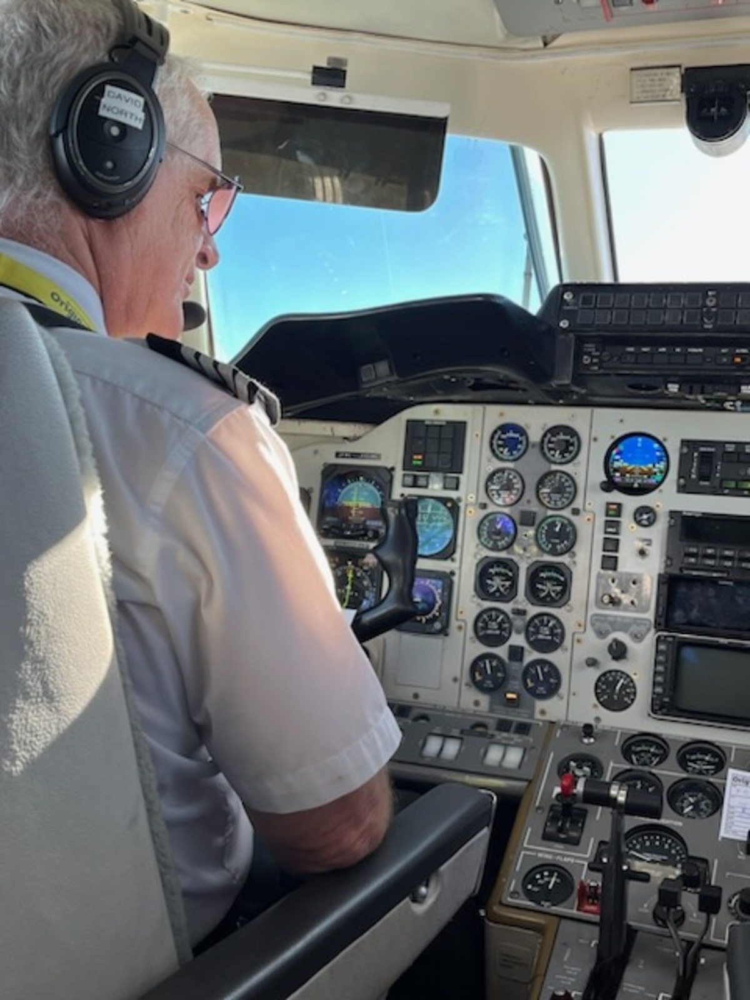
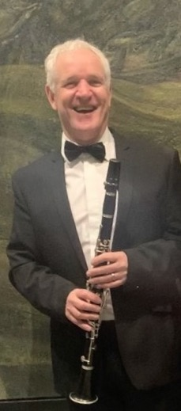

My Vision For Nelson
Nelson is a wonderful place to live, but the region faces significant challenges.
We need sustainable, long term solutions rather than short term fixes.
We need to put people before profits
We need to ensure all Nelsonians are part of our community.
Nelson has been a wonderful place to bring up a family and we need to ensure it continues to remain family friendly, vibrant and inclusive.
I look forward to the opportunity to represent you.
Family
I moved to New Zealand from London in 1990. I met my wife, Alison, in Wellington and in 2002 we moved to Nelson. My wife has been a community nurse for over 40 years. I have 2 wonderful children who are studying at the University of Canterbury. My oldest child is completing a masters in IT, my youngest is studying flute performance.
Work Background
I graduated from the University of Stirling with a Bachelor of Science degree in Biology, but worked initially in the information technology industry. When I came to New Zealand I learnt to fly and for the last 25 years I have been an airline pilot, including 15 years as a Captain for Air New Zealand and 5 years flying the Lifeflight Air Ambulance out of Wellington. I currently fly as a Captain for our local airline, Originair and until recently I was the Chief Flying Instructor at the Nelson Aero Club.

Social Activity
Apart from flying I am passionate about music. For many years I was part of Nelson Jazz club - I was on the committee and was president for several years, during which time I was involved in running the Jazz Festival. I played for many years in the big band. I currently play in the Nelson Symphony Orchestra and am the chair of the committee. I also play regularly in small groups in the community and retirement homes.

Why Vote For Me?
Key Issues I am used to working in community organisations to collaboratively achieve goals. As a scientist I understand the long-term context and science of climate change and the need to transform our systems of transport, energy and food production. The next Council term will be a time of great change, and more than ever we need Councillors who understand the complexities of the path ahead, communicate well and engage with the community, and are prepared to lead and to make positive change. We are now aware of the impact we have on the planet, and we can no longer just ignore it. We won't pay the price - our children and their children will bear the cost of our inaction so we need to make changes that lessen our impact without impacting our quality of life. I am a great believer in quality of life over standard of living. Standard of living is measured in material wealth. I get more pleasure from quality of life. Safe, vibrant communities. Pollution free environments, safe beaches and rivers to swim in, mountains to ride in and explore, national parks to enjoy. These are the treasures that New Zealend, and particulary Whakatu Nelson have to offer. Willingness to embrace new cultures, new experiences, tolerance are the secret to enjoying life to the full. A vibrant, safe, accesible city centre Transport. Reliable, effective, green options for transport - both Indvidual and for families. Iwi partnership A willingness to embrace strengths and values from all cultures, and to honour commitments madde by our forefathers. Economy We need a strong, sustainable economy so future generations can enjoy the lifestyle we have had. Don't vote for me if you want simple solutions to complex problems. They don't exist - you are being fed lies. Do vote for me if you want an balanced, experienced individual who will work hard to ensure wel all continue tio enjoy what our wonderful region has to offer.